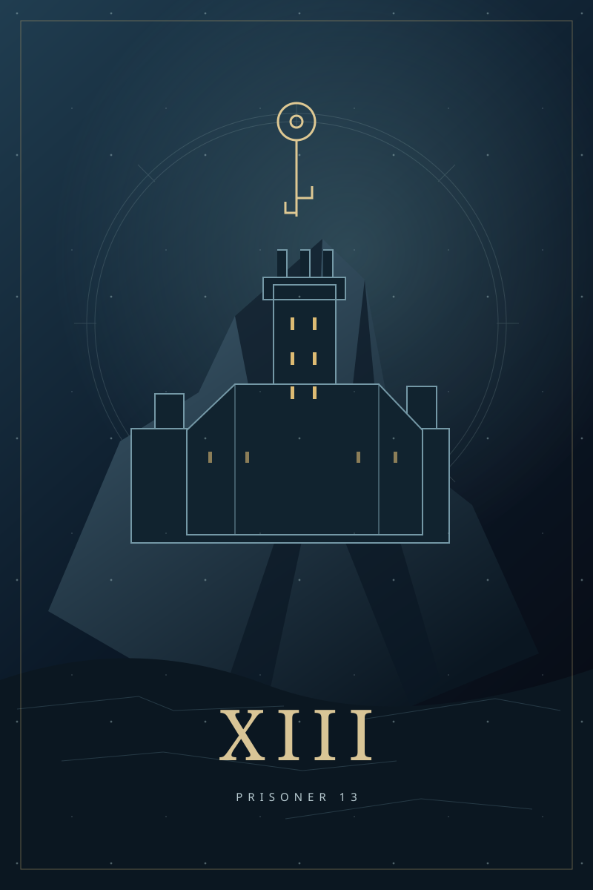

TAKE A SEAT / 冒险桌
等一个同路人
20000 — 20003
每桌最多六人
第一位上桌者为房主，满两人即可开局。离桌后房主顺位交接。等待桌断开超过30分钟会释放座位；已开局冒险不因短暂断线清空。身份保存在此浏览器，清除 Cookie 后无法直接恢复。
01 / 一起行动
把各自的办法接起来
有人交谈，有人留意巡逻，也有人准备下一步。队内聊天只用于讨论；每位成员提交自己的行动，或选择本阶段原地观察。大家准备好后，房主让主持结算。
跨场景移动需要全队同意。准备不充分或行动互相冲突时，主持会停在需要决定的地方。
02 / 来源与范围
关于这份改编
基于 Wizards of the Coast 出版的《Keys from the Golden Vault》所收录的《Prisoner 13》。本版为非官方中文合作叙事改编，原出版方未参与或背书。
原作版权归其权利人；本页不提供原书、官方地图或插画下载。AI 叙述可能偏离原作。查看官方原作 ↗